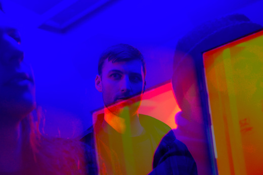
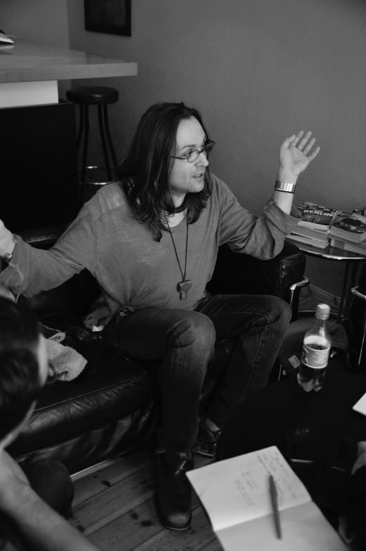

Der Name des im österreichisch-süddeutschen Raum des 18.
Jahrhunderts entwickelten Paartanzes Walzer wurde vom mittelhochdeutschen Wort «walzen» abgeleitet, was in etwa «drehen» bedeutet. Dem ist so, weil der Walzer auf einem 3/4-Takt basiert und die Tanzenden sich der Grundschritte wegen zwangsläufig um die eigene Achse drehen. Aus der Vogelperspektive betrachtet, gleicht eine Tanzfläche voller Paare, die diesen Tanz ausführen, dann auch einer höchst komplexen Maschine mit zig sich drehenden, ineinandergreifenden Zahnrädchen. Auf Grund ihrer unterschiedlichen Grössen walzen diese auch in ganz unterschiedlichen Kadenzen. Ein polyrhythmisches Konstrukt, das nicht wirklich nachvollziehbar ist und ganz bestimmt einer grösseren Idee folgt.

Gemeinsam mit dem Mutterschiff Präsens Editionen veröffentlicht zweikommasieben Martina Lussis musikalisches Debüt. Bereits während ihres Fine-Arts-Studiums an der Hochschule Luzern setzte sich die Künstlerin mit dem Thema Sound auseinander. Damals entstanden vorwiegend installative Arbeiten. Nun folgt mit Komposition O08 ihr Debüt auf Vinyl. Die Veröffentlichung ist auf elf 12"-Platten beschränkt. Das Stück ist jedoch auch online verfügbar.
Seit den frühen Neunzigerjahren veröffentlicht der Transgender-Aktivist, Theoretiker und Künstler Terre Thaemlitz Musik verschiedener Genres unter verschiedenen Namen auf verschiedenen Labels. Dabei erreicht der unter anderem auf Mule Musiq erscheinende deepe Ambient-House, den Terre seit gut 15 Jahren als DJ Sprinkles – ein Pseudonym, das er als DJ bereits seit zirka 1988 benutzt – wohl die meisten Leute. Aber auch seine elektroakustischen Kompositionen, die er unter seinem bürgerlichen Namen auf Labels wie Mille Plateaux, Zeitkratzer Records und dem eigenen Comatonse Recordings–Imprint veröffentlicht, bescheren dem in Japan lebenden Amerikaner Aufmerksamkeit.

Am 13. September findet in der St. Galler Grabenhalle zum ersten Mal das A-Synth Fest statt. Dafür eingeladen wurden mitunter Wrangler (ein neues Projekt von Cabaret Voltaires Stephen Mallinder, Benge von John Foxx and the Maths sowie Tunngs Phil Winter), The Space Lady, Stellar OM Source, Papiro & Stu, Klangforscher und Can Love Be Synth?